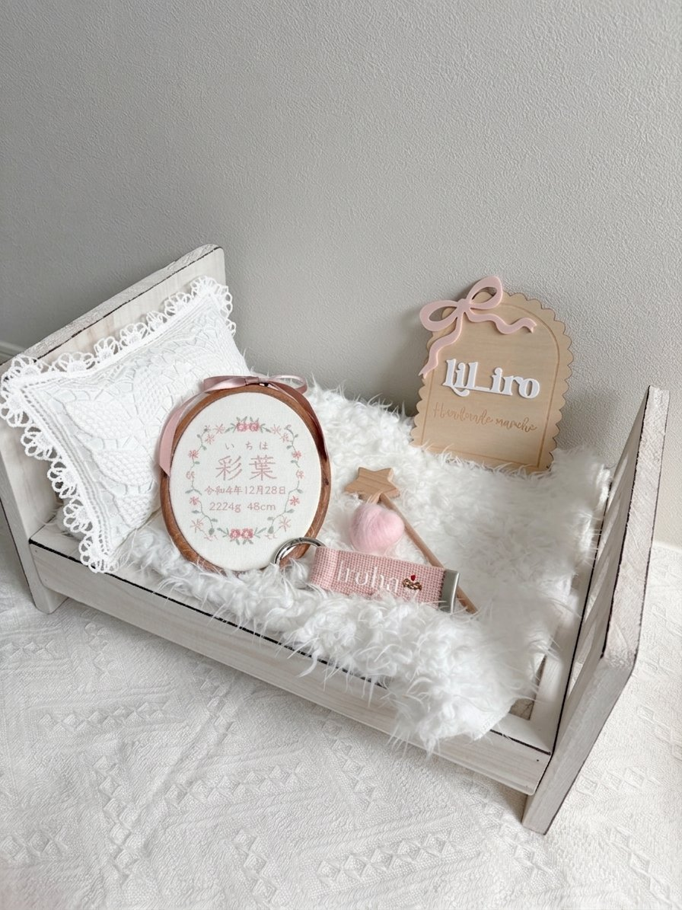
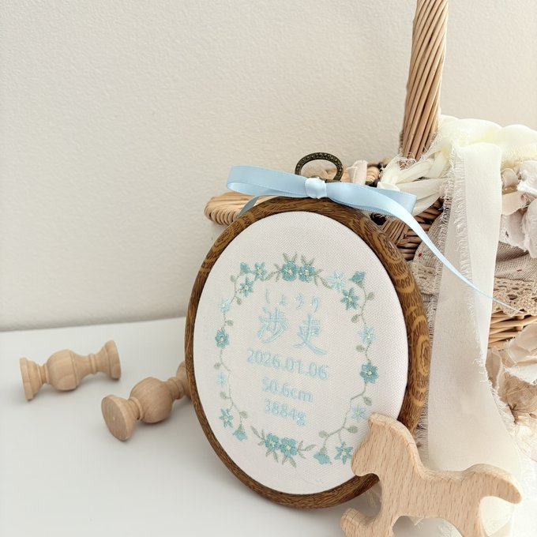
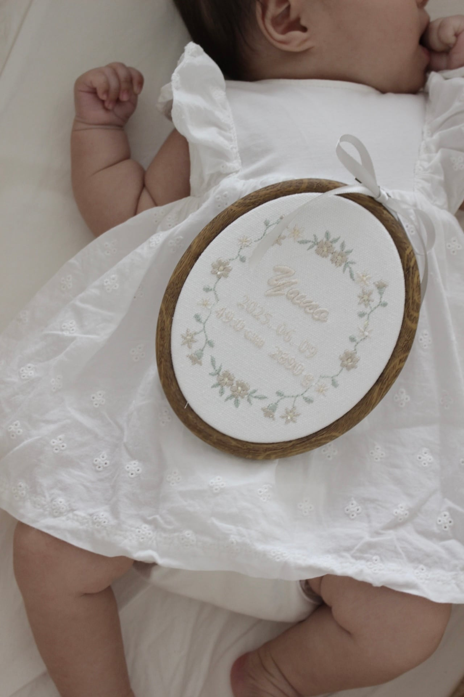

命名書はいつまで飾る？
お七夜の意味から保管方法まで解説

赤ちゃんの名前を書いて飾る「命名書」。用意してみたものの、「これっていつまで飾るんだろう？」「しまった後はどうすればいいの？」と迷っていませんか？この記事では、命名書の由来から、飾る期間の目安、保管・処分の方法までをまとめて解説します。
命名書とは？お七夜に名前を披露する伝統行事
命名書は、赤ちゃんの名前を披露するために用意する書のことです。もともとは「お七夜（おしちや）」という、赤ちゃんが生まれて7日目の夜に行うお祝いの席で、家族やご先祖さまに名前をお披露目するためのものでした。
「この名前で、健やかに育ちますように」——命名書には、赤ちゃんの誕生を喜び、これからの成長を願う気持ちが込められています。形式は時代とともに変わってきましたが、その想いは今も昔も変わりません。
命名書はいつまでに用意する？
正式にはお七夜（生後7日目）までに用意するのが習わしです。ただ、現代では出産後の入院期間と重なることも多く、厳密に7日目にこだわるご家庭は少なくなっています。
ひとつの目安になるのが、出生届の提出期限である生後14日。名前が正式に決まるタイミングなので、「出生届を出したら命名書を飾る」という流れが自然でおすすめです。退院後、赤ちゃんとの生活が落ち着いてからゆっくり用意しても、まったく問題ありません。
なお、刺繍のオーダーメイド命名書のように製作にお時間をいただくタイプは、妊娠中にデザインの目星をつけておいて、お名前が決まったらすぐオーダーするのがスムーズです。出産準備リストに、そっと加えておいてくださいね。
命名書はいつまで飾る？しまうタイミングの目安
実は、命名書を飾る期間に正式な決まりはありません。一般的には、次のような節目でしまうご家庭が多いようです。
① お宮参りまで（生後1ヶ月頃）
もっとも多い目安。お宮参りで無事の成長を報告したら、区切りとしてしまいます。
② 床上げまで（産後3週間〜1ヶ月）
お母さんの体が回復して、日常の生活に戻るタイミング。
③ 出生届を出すまで（生後14日頃）
名前が正式に登録されたことをもって役目を終える、という考え方。
そして最近増えているのが、「しまわずに、ずっと飾る」という選択です。おしゃれなデザインの命名書が増えたことで、赤ちゃんの記念品としてだけでなく、お部屋のインテリアとして何年も飾り続けるご家庭が多くなりました。ニューボーンフォトやマンスリーフォト（月齢フォト）のアイテムに使ったり、毎年のお誕生日に一緒に写真を撮ったり——飾り方も楽しみ方も、自由に広がっています。

▲ インテリアにもなじむ、刺繍の命名書
飾り終えた命名書はどうする？保管と処分の方法
しまう場合は、へその緒や母子手帳、手形足形などと一緒に、思い出の品として保管するのが一般的です。専用の箱や桐箱にまとめておくと、大きくなったお子さまと一緒に見返すときの宝物になります。
どうしても処分したい場合は、そのままゴミに出すのは気が引けるもの。神社やお寺のお焚き上げに出すと、感謝の気持ちとともに手放すことができます。郵送で受け付けてくれるところもあります。
「ずっと飾る」なら、色あせない刺繍の命名書という選択
何年も飾ることを考えると、選ぶときに少し意識したいのが「長く飾っても楽しめる素材かどうか」。毎日目にする場所に置くものだから、時間がたっても風合いが変わりにくいものだと安心です。
その点でおすすめしたいのが、布に刺繍で名前を入れた命名書です。糸で入れたお名前は色あせしにくく、立体感があたたかくて、お部屋に優しくなじみます。lil iro babyの「いろどりのリース刺繍フレーム 命名書」は、お花のリース刺繍の真ん中に、お名前と誕生日をひと針ずつ刺繍でお入れする命名書です。木枠風のフレームに入れてお届けするので、棚に置いても壁に掛けてもさまになり、インテリアとして長く楽しんでいただけます。
そしてもうひとつ、おすすめの楽しみ方がマンスリーフォト（月齢フォト）です。命名書の大きさはずっと変わらないから、毎月赤ちゃんの隣に置いて撮ると、「こんなに大きくなったんだ」という成長がひと目でわかる記録になります。ねんね期はお顔の横に、おすわり期は手に持って——お名前と一緒に、毎月の変化を写真に残していけます。

▲ 赤ちゃんと一緒に。成長と一緒に撮りたくなる一枚
刺繍命名書がずっと飾る派に選ばれる理由
・糸で入れたお名前は、色あせしにくく長く楽しめる
・木枠風フレームで、棚置きも壁掛けもOK。インテリアになじむ
・マンスリーフォトに添えれば、赤ちゃんの成長がひと目でわかる比較アイテムに
・ピンク／ベージュ／ブルーの3カラーで、どんなお部屋にもなじむ
・お名前と誕生日を刺繍するオーダーメイド。世界にひとつだけの記念品に
ご出産の記念にはもちろん、出産祝いのギフトとしても人気のアイテムです。お名前が決まったら製作をスタートするので、贈り物の場合はご出産の報告を受けてからのオーダーで間に合います。字体やレイアウトは、お作りする前にシミュレーション画像でご確認いただけるので、はじめての方も安心してオーダーしていただけます。
お届けまでの目安
・通常オーダー：ご注文から30日以内に発送
・お急ぎオプション：10日以内に発送
・それより早くご入用の場合も、製作のタイミングによっては対応できることがあります。ご注文前にお気軽にご相談ください。
お名前と誕生日を刺繍でお入れする、世界にひとつの命名書
view item